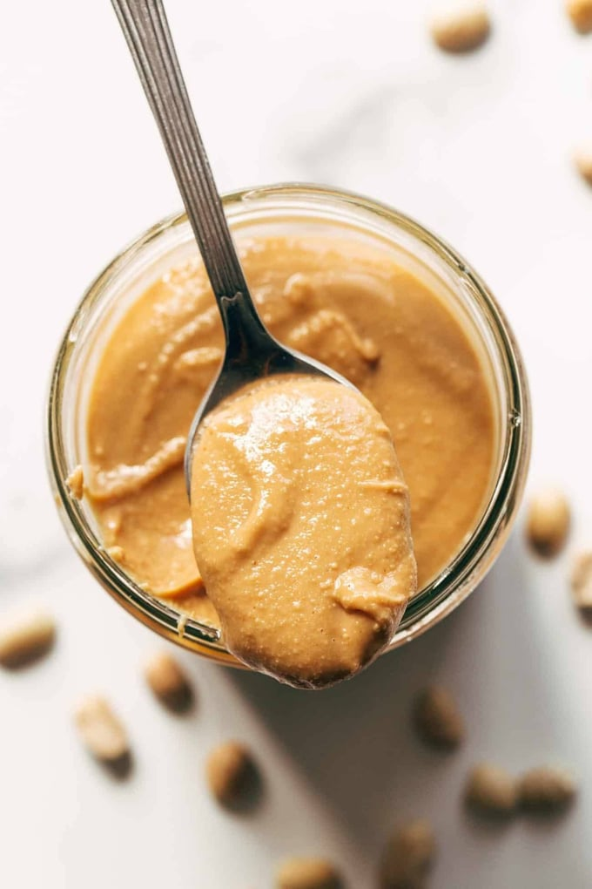

Homemade Peanut Butter

Description
Easy, cheap, and endlessly customizable to your individual palette. Better than any of that pathetic sugary, oily crap grocery stores sell.
Ingredients
- Food processor
- Roasted and unsalted peanuts (VERY important that they are unsalted.)
- (optional) Small spoonful of brown sugar
- (optional but highly recommended) a spoonful of cinnamon